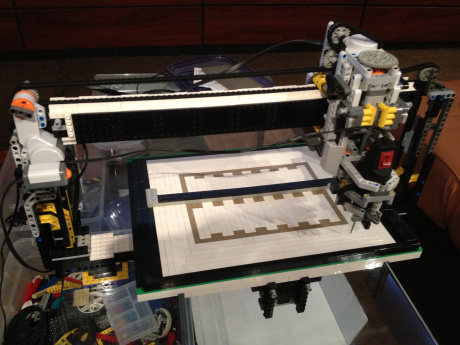
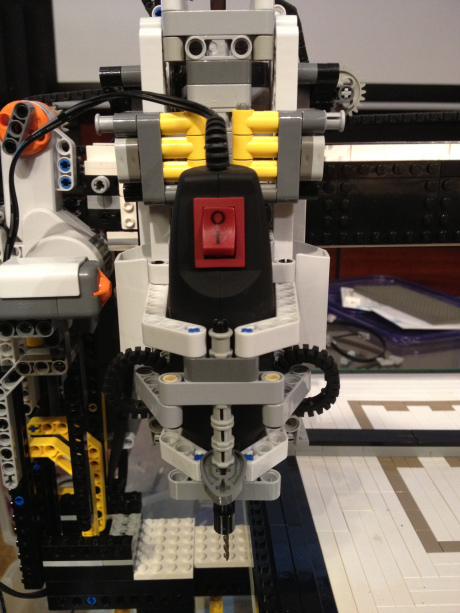
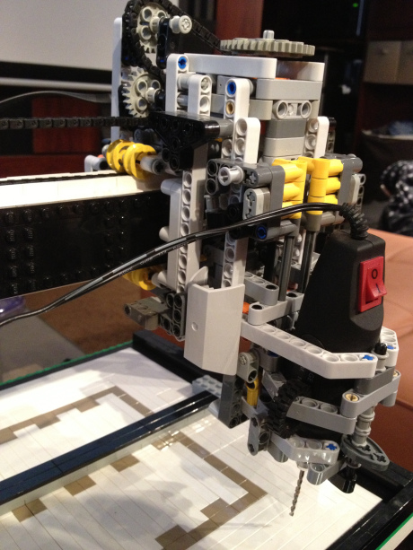
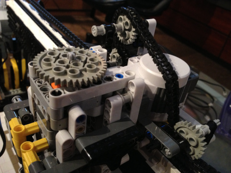
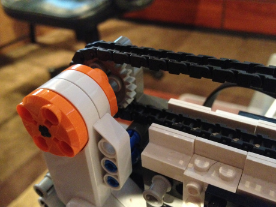
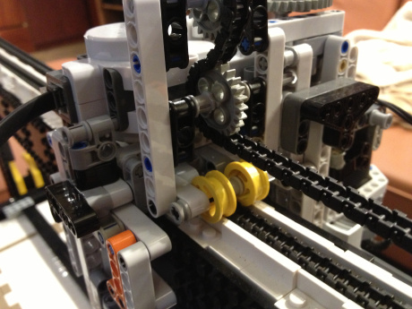
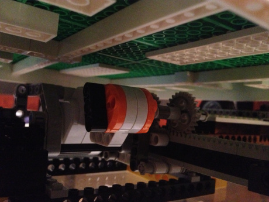

A Lego 3D printer
CNC machines have become a recent obsession of mine, and as a result, I decided to build one out of a Lego Mindstorms NXT kit. After leaving Legos sprawled across my room for over a week and a half, I finally finished creating a machine that can manipulate a cutting tool with some impressive precision.

The tool
The cutting tool is a small hand dremel that I found on Amazon. It is excellent for cutting accurately through green floral foam. 
The cutting tool is mounted to a somewhat intricate linear actuator that uses a worm gear for maximum precision. One rotation of the worm gear moves the dremel 3 millimeters up or down, so the Lego motor's 2.5 degree accuracy gives an z-axis accuracy of the cutting head of approximately 20 micrometers.

To achieve the same level of accuracy on the other axis, I used the Lego bike chain with a 24 tooth gear.  
The track that the cutting head moves on laterally has a space for the bike chain slide underneath. The yellow wheels ensure that there is no static friction when making minor adjustments to the cutting head's position. 
Underneath the cutting table, there is another motor that drives a rack and pinion setup for the last axis of cutting head motion. 
I used leJOS to write a Java program for controlling the cutting head, and I used Mathematica to communicate the coordinates for cutting out a 3D file.